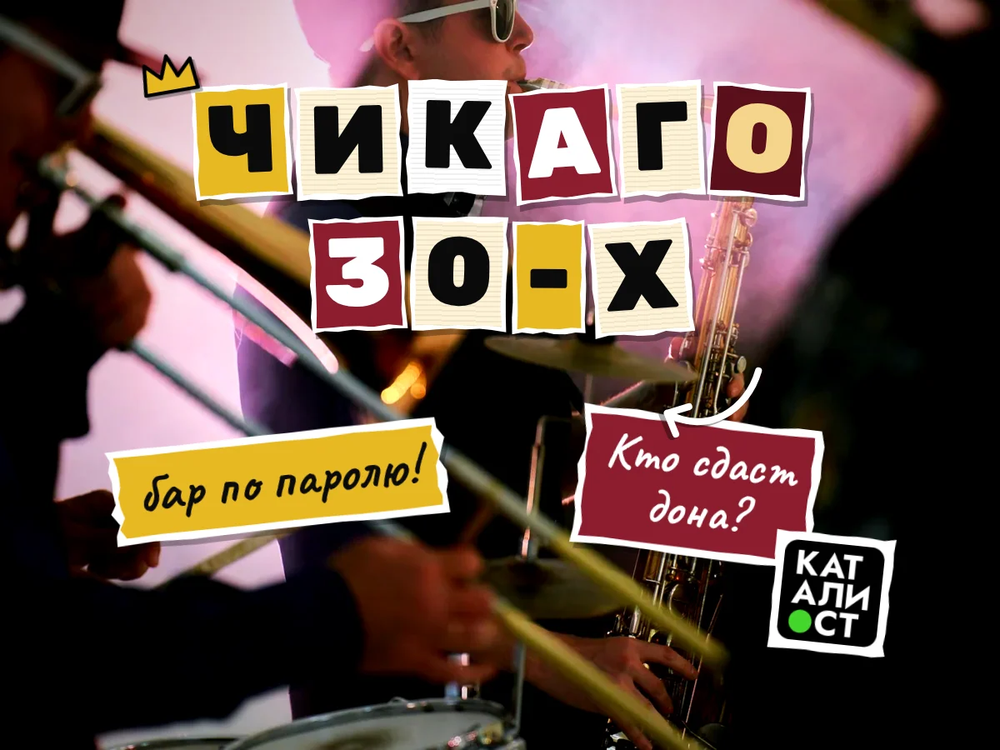
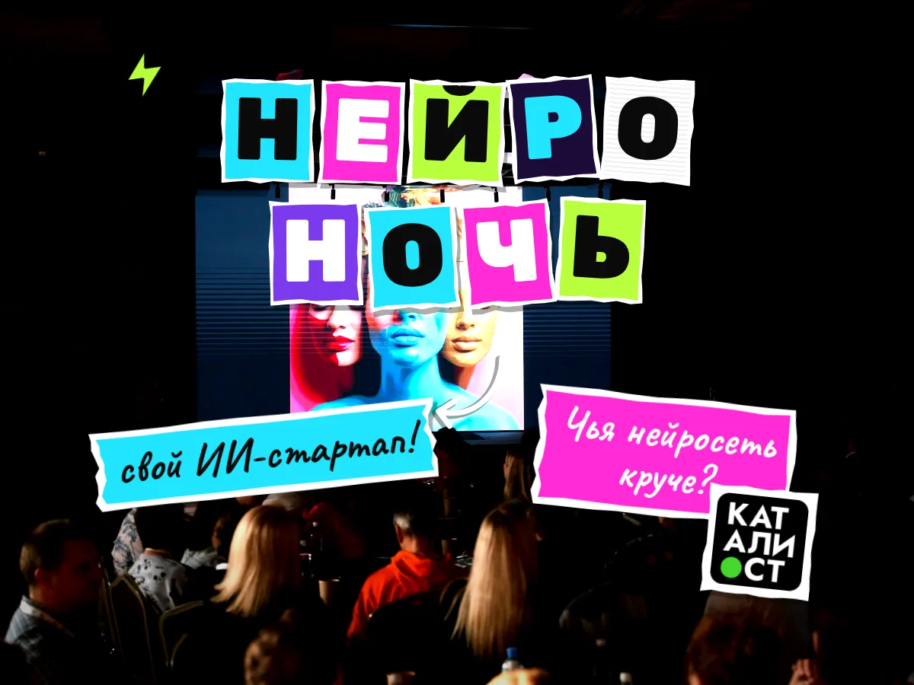
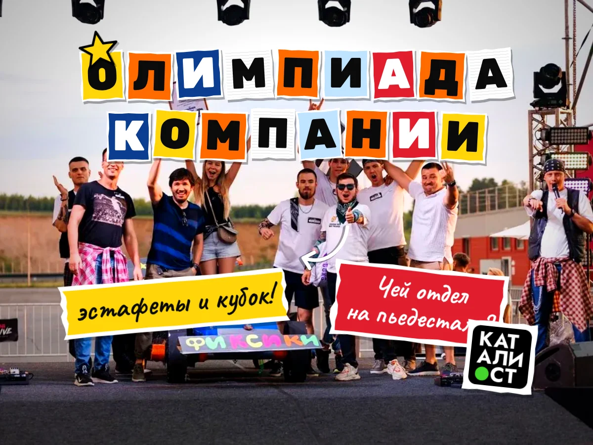

Обложки корпоративов, круг 3
Стиль варианта 1: рваные буквы на клочках, стикеры-вопросы, значок-каракуля, логотип наклейкой. Три разных сценария с живой страницы /korporativ/, и у каждого своя палитра клочков и стикеров. Каждая обложка показана целиком и в карточках на экранах 1440 и 1024.
Что ещё сделано. В сборщик заложены 15 палитр и 15 сценариев. После твоего ОК весь набор собирается одной командой, $0, около двух минут. Палитры внизу.
1Чикаго 30-х: бар по паролю
Палитра «Бордо и золото»: золото, бордо, кремовая бумага. Фото джаз-бэнда со страницы сценария. Стикеры: «бар по паролю!», «Кто сдаст дона?».

2Нейроночь: вечер с ИИ
Палитра «Неон»: циан, маджента, лайм на фиолетовом. Фото тёмного зала с экраном со страницы сценария, подсвечено. Стикеры: «свой ИИ-стартап!», «Чья нейросеть круче?».

3Олимпиада компании
Палитра «Спорт»: оранжевый, синий, красный, жёлтый. Дневное фото команды на сцене с флагом, над головами воздух. Стикеры: «эстафеты и кубок!», «Чей отдел на пьедестале?».

Все 15 палитр
Под каждым названием сценарий, за которым палитра закреплена. Пары «фон клочка и буква» проверены на контраст: самая слабая пара не ниже 3,2 к 1. Можно поменять любую палитру у любого сценария.